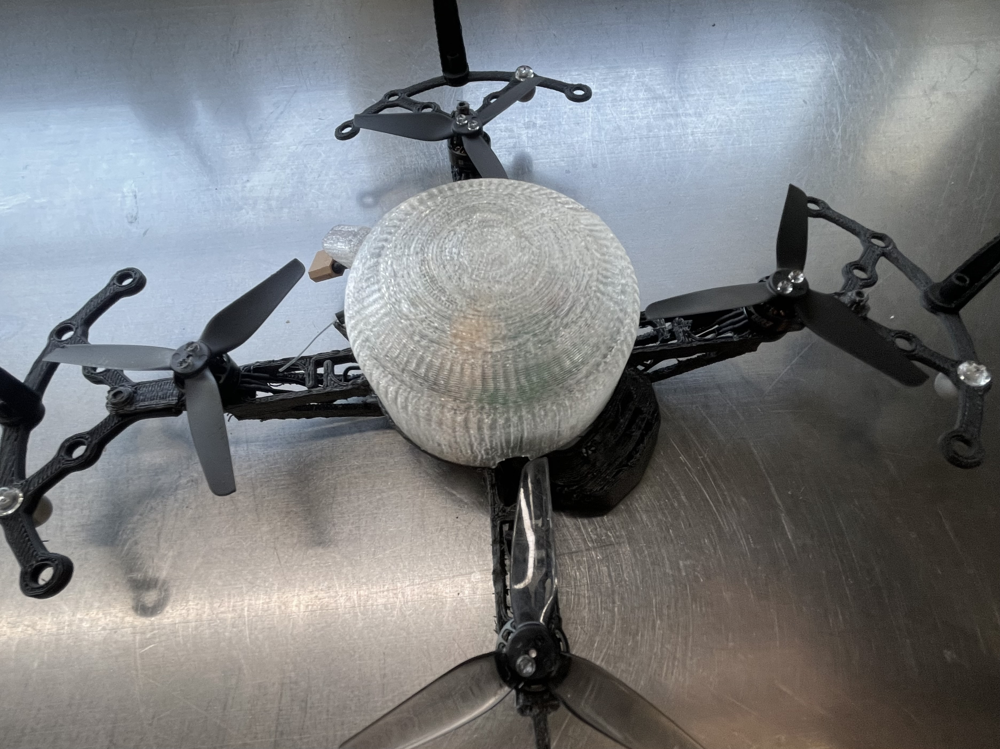
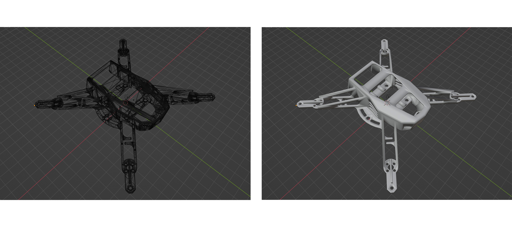

[ Drone Light Show - Indoor ] installation
Medium installation
year June2025
software blender / photoshop / Premiere Pro / VS Code
本作は、屋内空間におけるドローンライトショーの可能性を探るインスタレーション作品である。
一般的なドローンライトショーは、GPSによって機体の位置情報を取得・制御し、屋外空間で実施される。
本作品では、GPSに依存せず、カメラを用いた位置認識によって機体の挙動を制御することで、屋内でのドローンライトショーを実現した。
制作にあたっては、インターンとして在籍していた企業にて、ドローン機体をデータから出力・組み立てる工程に関わり、構成や配置、演出を担当した。
機体の動きが空間に与える影響を検証しながら、屋内ならではの距離感を活かした表現を試みている。
屋外での大規模演出とは異なり、観客との物理的な近さや、建築空間との関係性を前提とした、より身体的で繊細なライトショーの在り方を提示することを目的としている。
 